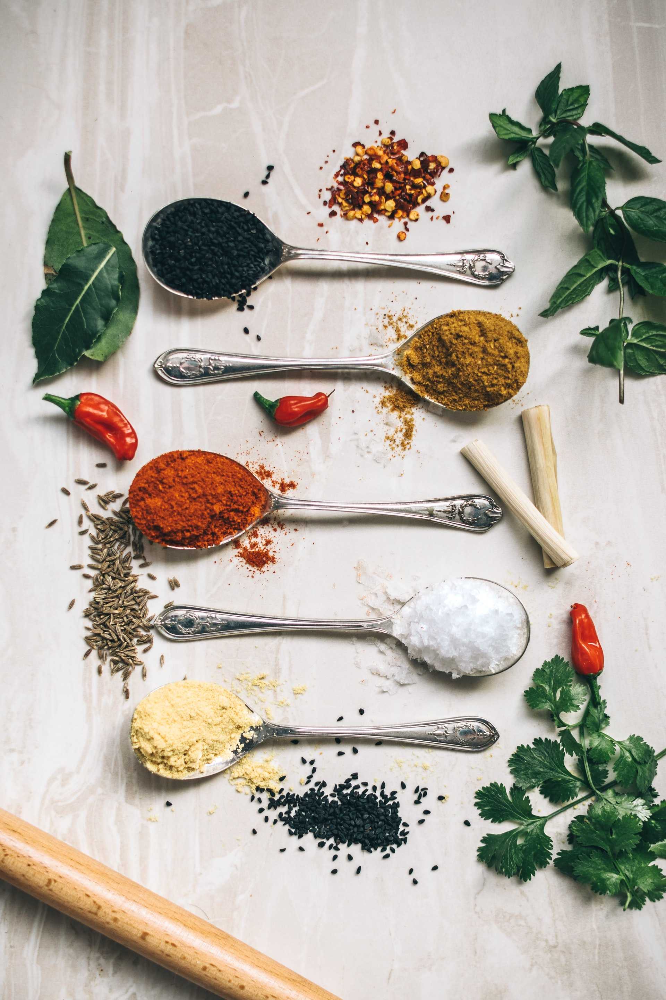

Over mij
Mijn hobby's
Ik heb van mezelf meerdere hobby's.
In mijn vrije tijd doe ik vooral aan gamen en aan designen.
Sport heb ik vooral vroeger gedaan toen ik nog jong was, ik heb toen op Volleybal en Voetbal gezeten deze sporten vind ik nogsteeds leuk om te doen maar ik vind het niet fijn dat er dan een verplichte tijd is dat ik dat moet doen. Ik speel het liever wanneer ik er zin in heb.
Ook heb ik vorig jaar door mijn stage in de keuken en baan kunnen oppakken waar ik vaak het opmaken van de borden en het maken van de nagerechten mag doen. Ik vind het fijn om bij Restaurant Oost doordat de collega's die daar werken gezellig zijn en je met ze kan lachen.

In mijn vrije tijd doe ik vooral aan gamen en aan designen.
Sport heb ik vooral vroeger gedaan toen ik nog jong was, ik heb toen op Volleybal en Voetbal gezeten deze sporten vind ik nogsteeds leuk om te doen maar ik vind het niet fijn dat er dan een verplichte tijd is dat ik dat moet doen. Ik speel het liever wanneer ik er zin in heb.
Ook heb ik vorig jaar door mijn stage in de keuken en baan kunnen oppakken waar ik vaak het opmaken van de borden en het maken van de nagerechten mag doen. Ik vind het fijn om bij Restaurant Oost doordat de collega's die daar werken gezellig zijn en je met ze kan lachen.
Mijn middelbare school
Mijn middelbare schooltijd kan je heel snel omschrijven met 1 woord en dat is dat het simpelweg een rotzooitje is, ik ben een persoon die niet houd van het zitten achter een boek en uren lang gaat leren. Daarom verbaasde het me toen ik 9u achterelkaar op mijn eerste dag had geleerd op w3schools.com hoe ik moest omgaan met de basis van HTML en CSS
Ik ben in mijn eerste jaar op school begonnen met MAVO, ik merkte toen al snel dat ik het leren niet leuk vond en daardoor is mijn motivatie toen weggegaan. In mijn 2de jaar ben ik naar Kader gegaan en heb ik het keuzedeel HBR (Horeca, Bakker, Recreatie) gekozen dit beviel mij beter dan het constante leren, want nu kon ik met mijn handen werken. Sinds groep 8 werd ik al naar voren gevraagd om iets op te lossen met de computer omdat ik de jongen uit de klas was die wat verstand had van computers. in de 3de heb ik dan eindelijk gevonden wat ik op mijn MBO wou gaan doen, toen ben ik begonnen met het aanpassen van LUA scripts voor de game FiveM, hier is mijn passie gegroeid voor het developen. Nu zit ik in de 4de maar zit ik nogsteeds vast aan een boek en schrift, maar ik ga nog even doorzetten en zorgen dat ik volgend jaar over kan naar het MBO. Ik ben een paar weken terug wezen kijken bij het GLR en dat beviel me al snel omdat ik zag dat je je creativiteit kon uiten, je kon jezelf zijn en vragen en dat is precies wat ik zoek om verder te komen in de development wereld te komen
Ik ben in mijn eerste jaar op school begonnen met MAVO, ik merkte toen al snel dat ik het leren niet leuk vond en daardoor is mijn motivatie toen weggegaan. In mijn 2de jaar ben ik naar Kader gegaan en heb ik het keuzedeel HBR (Horeca, Bakker, Recreatie) gekozen dit beviel mij beter dan het constante leren, want nu kon ik met mijn handen werken. Sinds groep 8 werd ik al naar voren gevraagd om iets op te lossen met de computer omdat ik de jongen uit de klas was die wat verstand had van computers. in de 3de heb ik dan eindelijk gevonden wat ik op mijn MBO wou gaan doen, toen ben ik begonnen met het aanpassen van LUA scripts voor de game FiveM, hier is mijn passie gegroeid voor het developen. Nu zit ik in de 4de maar zit ik nogsteeds vast aan een boek en schrift, maar ik ga nog even doorzetten en zorgen dat ik volgend jaar over kan naar het MBO. Ik ben een paar weken terug wezen kijken bij het GLR en dat beviel me al snel omdat ik zag dat je je creativiteit kon uiten, je kon jezelf zijn en vragen en dat is precies wat ik zoek om verder te komen in de development wereld te komen
Mijn ervaring
Mijn development ervaring is niet het meest uitgebreid maar ik probeer steeds meer te leren.
Ik heb de laatste tijd stage gelopen bij een Website development bedrijf genaamd
RB-Media daar heb ik redelijk snel de basis kunnen leren doordat ik daar veel mensen had die mij konden helpen. Ik heb tijdens deze dagen goed kunnen leren hoe CSS, HTML en Tailwind werken.
Ik heb de laatste tijd stage gelopen bij een Website development bedrijf genaamd
RB-Media daar heb ik redelijk snel de basis kunnen leren doordat ik daar veel mensen had die mij konden helpen. Ik heb tijdens deze dagen goed kunnen leren hoe CSS, HTML en Tailwind werken.